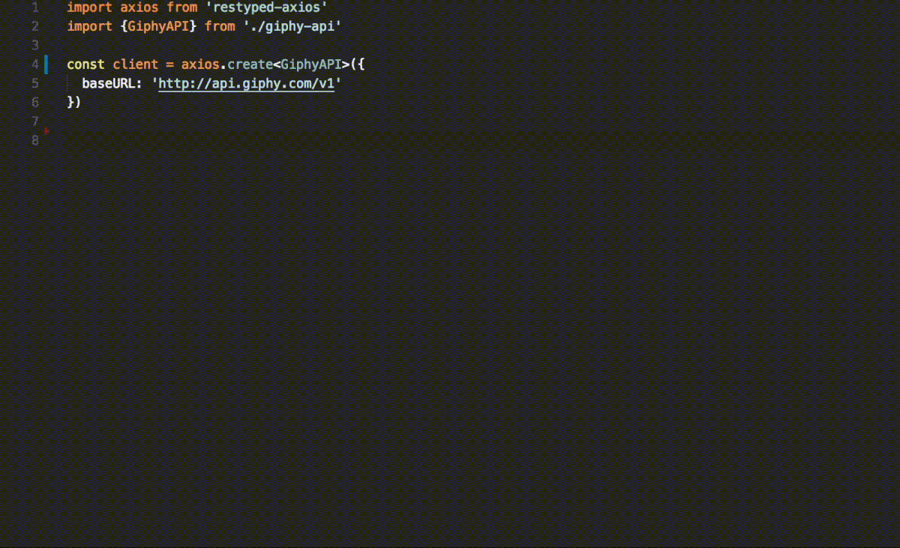
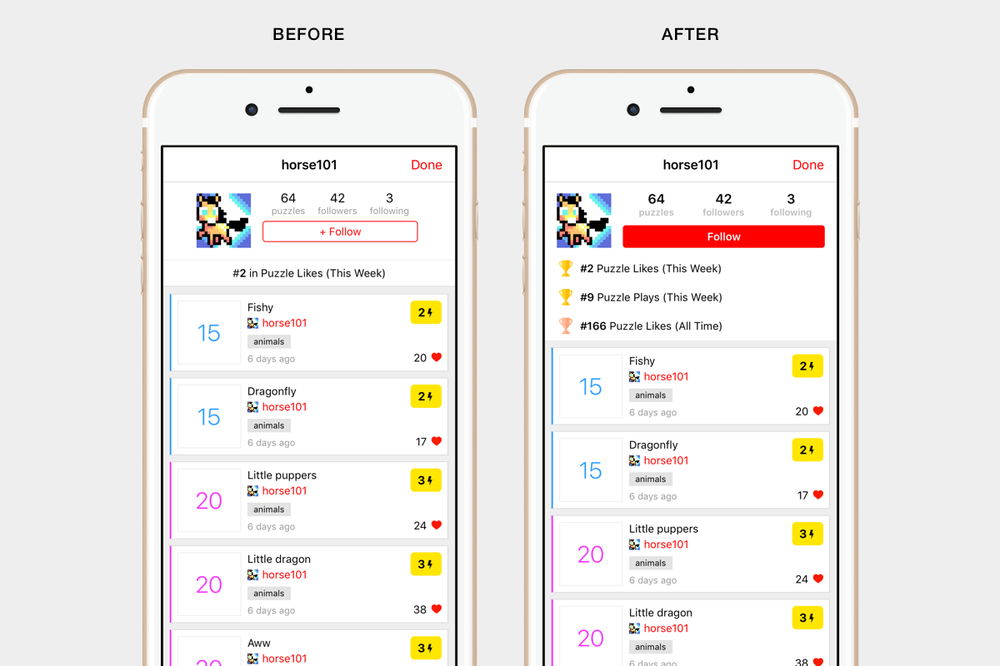
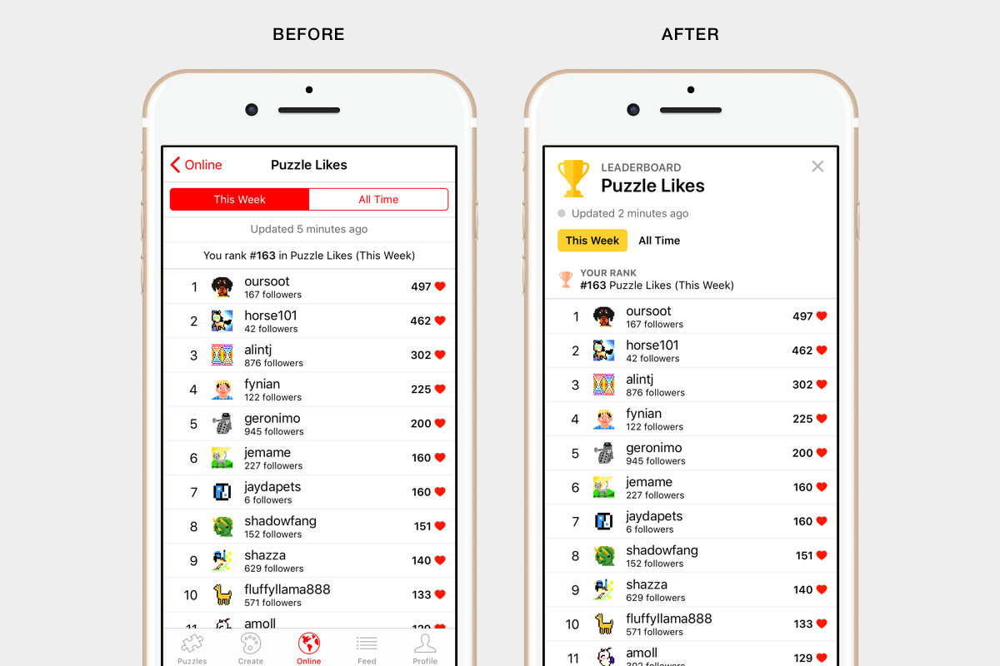

<?xml version="1.0" encoding="UTF-8"?><rss xmlns:dc="http://purl.org/dc/elements/1.1/" xmlns:content="http://purl.org/rss/1.0/modules/content/" xmlns:atom="http://www.w3.org/2005/Atom" version="2.0" xmlns:media="http://search.yahoo.com/mrss/"><channel><title><![CDATA[Falcross Blog]]></title><description><![CDATA[Building the world's largest online Picross community.]]></description><link>https://blog.falcross.com/</link><generator>Ghost 0.11</generator><lastBuildDate>Sat, 19 Nov 2022 08:11:22 GMT</lastBuildDate><atom:link href="https://blog.falcross.com/rss/" rel="self" type="application/rss+xml"/><ttl>60</ttl><item><title><![CDATA[Introducing RESTyped: End-to-end typing for REST APIs with TypeScript]]></title><description><![CDATA[<p></p>

<p>Typescript is a one-way street: Once you start using it, it's hard to go back to plain JS. In fact, you'll probably decide to write your entire application in TypeScript.</p>

<p>After happily typing all of your models, you notice that there's a disconnect: Your types don't make it over the</p>]]></description><link>https://blog.falcross.com/introducing-restyped-end-to-end-typing-for-rest-apis-with-typescript/</link><guid isPermaLink="false">ae6032ae-6fd7-4276-b7b6-1fa64a4b6dae</guid><dc:creator><![CDATA[Arman Dezfuli-Arjomandi]]></dc:creator><pubDate>Thu, 14 Dec 2017 18:52:00 GMT</pubDate><content:encoded><![CDATA[<p></p>

<p>Typescript is a one-way street: Once you start using it, it's hard to go back to plain JS. In fact, you'll probably decide to write your entire application in TypeScript.</p>

<p>After happily typing all of your models, you notice that there's a disconnect: Your types don't make it over the wire! Neither the server or client have any information about what types HTTP requests or responses should be.</p>

<p>RESTyped was designed to bridge the gap by creating an easy way to share types between your API server and any public or private clients.</p>

<h3 id="stronglytypedapicalls">Strongly typed API calls</h3>

<p></p>

<p>In the GIF above we're writing a GET request to the excellent Giphy API using <a href="https://github.com/rawrmaan/restyped-giphy-api">its RESTyped definition</a>. Here are 3 things you may have noticed:</p>

<ol>
<li>The editor is auto-suggesting routes available in the API  </li>
<li>The query params are type checked  </li>
<li>The <code>res.data</code> object is automagically typed</li>
</ol>

<p>Bonus: The API call was made using normal axios syntax.</p>

<p>When you consume an API with a RESTyped definition, you'll save time jumping back and forth between docs and code, and reduce bugs in the process. It's an easier, safer way to consume APIs.</p>

<h3 id="stronglytypedroutedefinitions">Strongly typed route definitions</h3>

<p>If you've written your backend in node.js, you can take advantage of end-to-end typing by creating one RESTyped definition file and sharing it between your server and client.</p>

<p>Currently, RESTyped supports express.js in the form of <a href="https://github.com/rawrmaan/restyped-express-async">restyped-express-async</a>. Here's what a route definition looks like:</p>

<script src="https://gist.github.com/rawrmaan/fe52e044c4e7f066f23e53088d1c3374.js"></script>

<p>If your server and client don't exist in the same repo, I recommend keeping the RESTyped definition in your server's repo and publishing it as a npm module with <a href="https://github.com/lerna/lerna">lerna</a>.</p>

<h3 id="howitworks">How it works</h3>

<p>You can use RESTyped by creating or importing a RESTyped <a href="https://github.com/rawrmaan/restyped#specification">definition file</a> and using one of the available <a href="https://github.com/rawrmaan/restyped#how-to-use-it">library wrappers</a> to declare and call your routes with strong typing.</p>

<p>RESTyped is a creative exploitation of TypeScript's <em>keyof/Lookup Types</em> (introduced in 2.1), <em>Generic Parameter Defaults</em> (introduced in 2.3) and improved generic inference (introduced in 2.4). It's actually very simple, and the best way to grok it is to read the <a href="https://github.com/rawrmaan/restyped#specification">spec</a>, <a href="https://github.com/rawrmaan/restyped#full-stack-example">examples</a> and <a href="https://github.com/rawrmaan/restyped-axios/blob/master/index.ts">client implementation</a>.</p>

<p><strong>I highly recommend you use <a href="https://github.com/Microsoft/vscode">Visual Studio Code</a> as your editor for the best experience, as it has the best TypeScript support and auto suggestions available.</strong></p>

<h3 id="whyrestypedandwhynow">Why RESTyped, and why now</h3>

<p>I've been writing full-stack apps for over 5 years. As I became enamored with TypeScript, I saw potential for creating a project that would give API development the same seamless experience that TypeScript provides for the rest of an application.</p>

<p>Some of the features I needed to make it happen weren't available in TypeScript, however, and it wasn't until version 2.4 that all the pieces fell into place. That's when I started working on RESTyped.</p>

<p>There are other solutions to build typed APIs out there, like GraphQL, but I don't like the idea of wrangling two separate type systems, and I love the simplicity of REST APIs. RESTyped gives you strong typing for your API without re-architecting your whole API layer or making big compromises.</p>

<h3 id="whousesthis">Who uses this</h3>

<p>I use RESTyped to save time building <a href="https://www.falcross.com/">Falcross</a>, the world's largest Picross puzzle community. <a href="https://www.tryhabitat.com/">Habitat</a> uses RESTyped to sync their food delivery API with internal and external clients.</p>

<p>You can also check out the <a href="https://github.com/rawrmaan/restyped-giphy-api">Giphy API definition</a> and use it in your own project!</p>

<h3 id="furtherreading">Further reading</h3>

<p>I'm consistently inspired by the cool TypeScript projects and stories I see around the web. Here are a few of my recent favorites:</p>

<ul>
<li><a href="https://github.com/Neufund/TypeChain">TypeChain</a> and <a href="https://blog.hellobloom.io/how-typescript-makes-smart-contracts-easier-to-test-and-more-robust-c612a2d99537">Bloom's work</a> to create type-safe Ethereum smart contracts</li>
<li>This <a href="https://eng.lyft.com/typescript-at-lyft-64f0702346ea">blog post</a> about how Lyft uses TypeScript and their JS-to-TS <a href="https://github.com/lyft/react-javascript-to-typescript-transform">PropTypes converter library</a></li>
<li><a href="https://github.com/nestjs/nest">Nest.js</a>, a web application framework built in TS with some interesting FP/FRP ideas</li>
</ul>

<hr>

<p>Questions, comments, or feedback? I'd love to hear what you think about RESTyped! Hit me up at <a href="https://www.twitter.com/rawrmaan">@rawrmaan</a> or e-mail me at <a href="mailto:arman@rawrmaan.com">arman@rawrmaan.com</a>.</p>

<p>HN discussion: <a href="https://news.ycombinator.com/item?id=15934289">https://news.ycombinator.com/item?id=15934289</a></p>]]></content:encoded></item><item><title><![CDATA[Update 5.13.0: Redesigned profiles & leaderboards, notification improvements]]></title><description><![CDATA[<p>Coming in hot just over a week after the last release, this update contains some Online-focused improvements to improve your social Picross experience!</p>

<h2 id="redesignedprofiles">Redesigned profiles</h2>

<p></p>

<p>Profiles now adjust to big screens nicely and have a larger, bolder Follow button to attract more followers. There's also a larger focus on your</p>]]></description><link>https://blog.falcross.com/update-5-13-0-redesigned-profiles-leaderboards-notification-improvements/</link><guid isPermaLink="false">401ff671-cf5e-420c-b020-1bfb2f88b1c6</guid><dc:creator><![CDATA[Arman Dezfuli-Arjomandi]]></dc:creator><pubDate>Fri, 01 Dec 2017 23:36:00 GMT</pubDate><content:encoded><![CDATA[<p>Coming in hot just over a week after the last release, this update contains some Online-focused improvements to improve your social Picross experience!</p>

<h2 id="redesignedprofiles">Redesigned profiles</h2>

<p></p>

<p>Profiles now adjust to big screens nicely and have a larger, bolder Follow button to attract more followers. There's also a larger focus on your achievments--your profile will now display up to 3 leaderboards that you rank on, regardless of whether you're primarily a player or an artist.</p>

<h2 id="redesignedleaderboards">Redesigned leaderboards</h2>

<p></p>

<p>Leaderbords received a nice visual refresh, and some leaderboards now update more frequently. Plus, there's finally an all-time <strong>Stars Earned</strong> leaderboard! That's right, after years of the stars icon in the Puzzles tab doing nothing when you press on it, it finally has a purpose.</p>

<h2 id="notificationsmovetofeedtab">Notifications move to Feed tab</h2>

<p>You'll find that the Notifications button is gone in your Profile tab. That's because Notifications have moved to the Feed tab for easier access!</p>

<p>Plus, if you're on Android, you won't get an annoying in-your-face alert every time a notification comes in.</p>

<p>You might also notice that notifications now update in real time while you're in-game. Neat!</p>

<h2 id="numbersbugfixed">Numbers bug fixed</h2>

<p>Some of you reported that some numbers weren't showing up on certain puzzles as of the last update. This is now fixed. Thanks for your reports, and especially for including screenshots!</p>

<p><strong>Technical details:</strong> In 5.12.1, I improved number rendering to reduce blurriness on Android by using small, base64-encoded versions of the numbers (about 7x7 pixels each) when numbers were below a certain size instead of scaling down 300x300 png's <code>require</code>'d through Metro Bundler.</p>

<p>The readability difference was drastic, but it turns out that React Native's <code>Image</code> component has a bug that causes it to occasionally not load base64 images on initial render: <a href="https://github.com/facebook/react-native/issues/12120">https://github.com/facebook/react-native/issues/12120</a></p>

<p>I've reverted to using <code>require</code> only, but kept the dynamic loading of smaller images on Android. This retains the readability improvements while ensuring all numbers show up when you open a puzzle.</p>

<h2 id="underthehood">Under the hood</h2>

<p>Leaderboard generation for many leaderboards is now much more efficient, putting less strain on the database so you will have a smoother online experience during busy playtimes.</p>

<p>Until next time, thanks for playing Falcross!</p>]]></content:encoded></item></channel></rss>